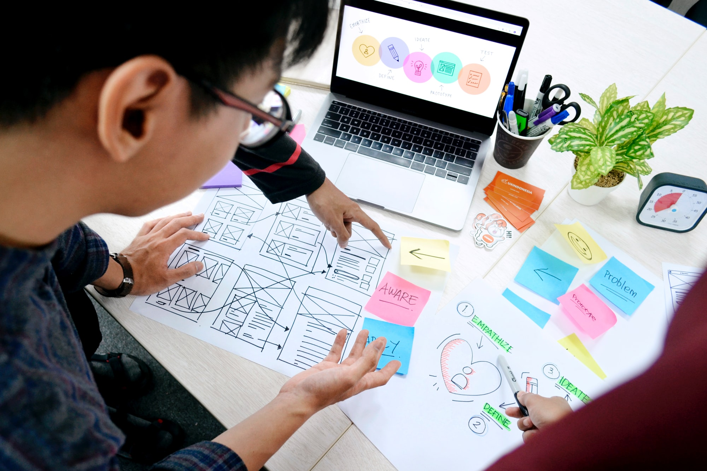

Teaching Programming Concepts is Hard
If you haven’t found the right resources yet, you’ll probably struggle learning to code. Some tutorials make coding more difficult than it needs to be, and some tutorials might not be a good fit for your learning style.
Also, make sure you’re getting your learning resources from a quality source – teaching doesn’t always equate understanding, so try to find sites or organizations that have a reputation for high quality.
No tutorial is perfect – but they shouldn’t be unnecessarily difficult to follow, either. Recently, I studied a lot of JavaScript tutorials on the internet and I struggled to understand what many of them were trying to teach. And I have a sound understanding of JavaScript – but I still struggled with the tutorials.
In fact, it is possible to build an application so that it works and satisfies its intended purpose – but it’s a different ball game when it comes to teaching how to build it.
Why is it hard to explain coding concepts?
A complex code base is hard to explain. Someone might scratch the surface when they’re trying to dissect it, but they might not give you a deep understanding of the subject matter.
When you’re looking at the code in a tutorial, think about it: is the code easy to follow for you as a beginner? Or are you struggling to make sense of what’s going on?
Think about this when you’re choosing your learning materials, as they can be a major reason why you are struggling to code. In short, learning to code starts with finding the right resources to learn from. Don’t take it for granted.
The question now is what is the way forward? Well, start learning from a few different resources – but not too many. Once you’ve gotten a feel for them, pick two or even just one among them that makes everything easy for you.
It’s important to do this, because what works for you may not work for me. So be sure to choose your own tutorials.
Don’t Just Memorize the Code
It is natural to memorize code when you don’t understand what you are doing. It’s especially tempting to do this if the resources you are learning from make things difficult for you to understand.
It may not seem like you are memorizing code, but you might be doing so subconsciously.
All I can tell you now is that you shouldn’t just memorize code or it will break your heart 💔! It will force you to struggle unnecessarily.
Here is why.
Code memorization gets you confused whenever you apply your knowledge because you don’t really understand what you’re doing. You haven’t actually learned how to code – you’ve just learned how to copy and paste.
Code memorization occurs whenever you store some code in your head without understanding what the code represents, how it works, and what the different parts actually do.
Since you don’t understand the core concepts, you will struggle to actually build projects on your own.
You might even give up…
For example, let’s look at the following code:
let students = ['Ope', 'Ayo', 'Ola'];
let count;
for ( count = 2; count >= 0; --count )
{
console.log(students[count]);
}
What will this log in the console? See, if you don’t truly understand how a for loop, increment, and decrement work, you will find it hard to understand the code above.
So, what do you have to do instead?
Whenever you realize that you don’t really understand a piece of code, break the code down into pieces. Then research the use of each of the pieces. Let’s use the code above as an example.
How to break down code into small parts
Step 1: You have to understand how a forLoop works:
for (..............){ }
What does this “for” loop do?
It is used to repeat an action or a series of actions several times
Step 2: You need to understand initialization
for ( initialization; conditional; increment or decrement ) { }
What is initialization used for?
It sets the beginning of the loop. It determines the position or index to start with.
Step 3: You need to understand conditionals.
What do conditionals do?
They set the condition that must be met for the loop to continue running.
If the condition evaluates to true, the loop will keep running. But if it evaluates to false, the loop will terminate (stop).
Step 4: You need to understand increment and decrement.
What is increment used for? We use it to add 1 to a number.
Increment can be divided into pre-increment ( ++increment ) and post-increment ( increment++ ).
How are they different? After adding 1 to a number, pre-increment returns the result like this:
let number = 5; console.log(++number)// 6
It returns 6 after 1 was added to 5. Post-increment will return the number we added one to instead of the result like this:
let number = 5;
console.log(number++) // 5
console.log(number) //6
You see, post-increment returns 5 after adding 1 to 5 and when we check the number, it is now 6.
In short, whenever we use pre-increment with a number, its result is returned. But if we use post-increment, the number itself is returned instead of its result. What they return makes all the difference.
So, what is the application of that in a loop?
Whatever the increment or decrement returns doesn’t affect the loop as the loop only deals with the result we get after applying post or pre increment to the number. They both add one to the initializer.
But we also have decrements – they subtract one from the count. That means, in this case, count will be decreased by one at every iteration.
let students = ['Ope', 'Ayo', 'Ola'];
let count;
for ( count = 2; count >= 0; --count ) {
console.log(students[count]);
}
So students [count] will return Ola at the first iteration because its index is 2.
It will return ‘Ayo’ at the second iteration because its index is 1 and ‘Ope’ will be returned at the third iteration as its index is zero. Then the loop will terminate because the count will be less than zero and the condition will evaluate to false.
And that’s it! That’s how you break code down into small pieces so you can puzzle it out.
Stop Overloading Yourself
Overloading yourself means dealing with more tasks than you can handle at a given time.
When you’re starting to learn to code, you might have the urge to learn everything quickly and gain every possible opportunity programming can offer.
So, you end up overloading yourself with tasks or assign yourself a complex task within a short period of time. Oh, no! That is one of the reasons why you’re struggling to code.
I can still remember how learning JavaScript was very hard for me because silly me overloaded myself. I learned var, let, const, functions, arrays, objects, and conditional statements in less than 30 minutes thinking I was ready to become a world-class software developer.
At the same time, I was learning other things in Python, PHP and still reading John Resig’s book that explains a lot of advanced concepts in JavaScript and how he developed or borrowed solutions to create jQuery.
One more thing…I finished a 100 pages text book and a 6-hour long video tutorial in just an hour.
Honestly, there is nothing wrong with reading or learning widely – but there is time for everything. You can’t know everything all at once. So, don’t overload yourself.
How to pace your learning
Choose a part of your project or a programming language you know is super simple to build or understand. Then ask a lot of reasonable and basic questions about it because there is a sense in nonsense. Hey wait! Let me give you an instance:
Imagine you want to learn JavaScript and you just decide…hey, I am going to learn just let and const today, and nothing else. And you ask a lot of simple and reasonable questions about them.
By doing that, your learning pace will seem slow but you’re most likely going to outpace your counterparts that rush everything (except if they have special brains which is a rare case).
Yes, handling several tasks at the same time or doing a thing with insufficient time makes coding difficult for you. It can also force you to quit if you don’t achieve a reasonable result along the line.
So, keep whatever you learn super simple and tame your curiosity because it is the opposite of focus.
Keep an Open Mind
There are a lot of conflicting opinions about programming languages, libraries, frameworks, techniques and approaches among software developers. Software developers are the most opinionated people I know.
You might have read or heard things like “Don’t Repeat Yourself (DRY)”,“Test Driven Development ( TDD )” , “Profit Driven Development ( PDD )”, “You Ain’t Gonna Need It ( YAGNI )”, “Clean Code”, “Always Be Coding (ABC)”, “Favour Composition over Inheritance” and many others. And maybe you wanted to take a side.
It is tempting to take sides based on the opinions of software developers you respect. But I don’t think you should until you truly understand what you’re doing. Your current job is to understand the fundamentals and build projects using them.
Eventually you will come across some challenges that will force you to use certain approaches, libraries, and frameworks. All approaches or techniques are useful based on context. No approach is either right or wrong, it is context that makes it so.
All these techniques can be useful in solving real world problems and all of them also have downsides. So, don’t worry too much about picking a side until you understand the fundamentals of your chosen programming language and have built some basic projects with it.
Develop a Research Mindset

Programming, most of the time, is like researching. You start with observation and then test several things until you achieve a satisfactory result. That is what programming looks like. You often don’t really know what you’re doing until it works.
Once you understand this, it’ll help you be content with necessary struggles. Because most of the time, you’ll have to learn how to fix a bug you have never seen in your career and it might really demand a lot of effort.
Now, you may struggle to fix that bug, and to be honest, it’s a necessary struggle. No software developer is free from such a struggle. Well, maybe 10x engineers (smiles) are free from it but I am not.
Being an expert is not about having answers to all questions, it is about knowing how to find the answer.
Remove Distractions
We all have distractions that can take away our focus from coding. What’s yours? Is it your current job, partner, gadgets, or just struggling to make ends meet?
You need to figure out what your distractions are and remove them before you start learning to code. Or you will just be starting and quitting again and again.
Sometimes, you can tackle challenges head-on, and sometimes you just have to leave them. In that case, you need to schedule your coding activities and time in such a way that you will not be distracted by things you can’t control or change
You can’t really be that effective with coding if you have a lot of distractions in your life, so you need to identify them and fix them one by one. This will help you increase your chances of achieving your programming dreams.
Don’t Work Too Hard
Relax! Don’t overwork yourself because you really need to understand the concepts you are dealing with at this stage. And it takes a rested, fresh mind to do it. So, don’t overwork yourself and jeopardize your learning effectiveness.
Programming is hard for experienced software engineers, let alone a beginner. Working too hard without getting reasonable results may discourage you easily. When you are a bit drained mentally, stop, take a break, and continue later.
Try it out. Quit a task for a few minutes. Work away from your computer. Sleep and free your mind but then don’t forget to try one more time…one more time until you understand it.
Conclusion
Struggling is a good thing when it’s productive. It makes you a better person or a better software developer. But don’t get me wrong – I am not telling you to struggle unnecessarily.
No software developer is free from struggle when they code. But it is worse to struggle unnecessarily by learning with the wrong resources, or not asking for help from a mentor or someone who can help you whenever you are stuck.
Now, go get things done.